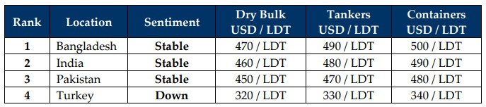

inWeekly Demolition Reports18/11/2024

As the effects of Donald Trump’s shock victory continues to have far-reaching effects of its own, the U.S. economy continues to strengthenunder President Biden on the news that the country is opening up offshore drilling in order to further reduce American dependence on foreign oil. This, along with China’s waning demand has caused crude oil to suffer this week and the barrel fell further to $67, booking a 5% drop by Friday. As President Biden also greenlights Ukraine on finally using long range U.S. made missiles in Russia unfolding a wider possibility of war, in a weird twist of events and amidst American and Israeli forces hammering Houthi strongholds and their arms depots across Yemen, the Baltic Dry Index surprisingly surged 293 points to 3,229 points this week. Meanwhile, as the destruction of Iran’s arms facilities continues to come to light, IDF’s demolition of secret Iranian nuclear facilities previously unknown to the world has raged a fire in the Iranian establishment for revenge. As Israel continues decimating Hezbollah leaders and strongholds across Southern Lebanon, the IDF also avenged a senior Hezbollah commander responsible for striking Netanyahu’s residence with a missile, killing the commander an air strike. As the sign of times get increasingly clear and a war-ready Trump gets ready to take office, the future, not only for the ship recycling community but the world at large, is seeing the writing on the wall. Economically as well, there are concerns Trump could be tough on China and mooted tariffs on Chinese imports (electric vehicles and steel in particular) could see an increased dumping of material into sub-continent locations – something both Pakistan & India have been struggling significantly with this year.
In the interim, as the U.S. economy continues to strengthen and the U.S. Dollar firms against nearly all recycling destination currencies (including China, where Chinese stocks recorded rallies this week), local steel plate falls from China saw various destination steel levels reciprocate in kind with declines of their own this week. Yet, deliveries of dry units continued at pace across Indian and Bangladeshi waterfronts over recent weeks of the declining BDA, including this one. Although supply has primarily been from the vintage container and dry bulk sectors, activity seems to have happily notched up a level as the industry heads towards the end of 2024, following one of the most barren years for ship recycling volumes in over a decade. As Bangladesh remains burdened by political instability and inflation, the Chattogram market has slow beyond all recognition for large parts of the year, leaving local buyers to cherry pick cheaper, geographically positioned units. Pakistan too continues to scramble for more IMF funding and stabilize its economy as buyers there have remained silent with only laughable offers coming forth of late. Finally, Turkey remains entrenched in its declining Lira, with both import and local steel recording USD 10/Ton declines across the week, leaving Aliaga levels down by USD 10/MT.
Overall, as various shipping events were underway across the world, most notably, the annual Tradewinds Ship Recycling conference in Copenhagen and Bahri week in Dubai, markets remained on a fairly even footing for the week with little movement and/or activity to report, given that industry players remained busy with meetings and sentiments finally seem to be on even keel as a healthy collection of sales continue to be confirmed to buyers with ready finances and empty yards.
For Week 46 of 2024, GMS Market Rankings / vessel indications are as below.

📄 Download PDF: Ship-recycling-market-insight-Week-46-11-15-2024-Sign_of_Times.pdfSource: GMS,Inc.https://www.gmsinc.net/gms_new/index.php/web